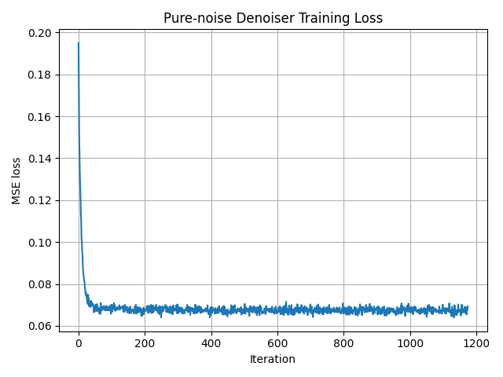

The UNet architecture can be decomposed into three components: a left encoder path that applies
a sequence of downsampling blocks to shrink spatial resolution and expand channel dimensionality,
a compact middle block that aggregates global context, and a right decoder path that restores
spatial resolution through upsampling blocks. Skip connections transmit feature maps from each
encoder stage to the matching decoder stage, ensuring that coarse semantic structure from deeper
layers is combined with fine spatial detail preserved in earlier layers.
In the MNIST setting, this template is instantiated at three resolution levels. A small vocabulary
of operations—convolutions with Batch Normalization and GELU activations, strided convolutions for
downsampling, transposed convolutions for upsampling, flattening via average pooling, and
channel-wise concatenation—is composed into the ConvBlock, DownBlock, and
UpBlock modules shown below. During Part 1, this UNet functions as a single-step
denoiser: a clean 1×28×28 MNIST image is corrupted by Gaussian noise with standard deviation σ, and
the network is trained with an MSE objective to predict the clean digit in a single forward pass.
Varying the corruption level provides a controlled way to examine the limits of the model. Small
σ produces mildly perturbed digits, whereas large σ yields images that approach pure noise. This
parameter sweeps out the regimes in which recognizable structure persists and the regimes in which
the network must effectively infer the digit from highly degraded evidence.
1.2 Using the UNet to Train a Denoiser
The first visualization surveys how a fixed handwritten “7” responds to increasing noise levels.
As σ moves from 0.0 to 1.0, sparse perturbations evolve into dense, irregular patterns that
progressively obscure stroke geometry. Mid-range σ values maintain enough brightness structure for
the digit to remain identifiable, whereas high σ values leave only faint residual cues. This
sequence delineates the threshold beyond which the representation no longer contains usable
information.
Noise-only σ sweep: rising noise gradually eliminates stroke structure until the image becomes
visually indistinguishable from Gaussian noise.
A more detailed study compares the noisy input, the UNet’s reconstruction, and a pixelwise
absolute-error heatmap at each σ. When σ is small, the reconstruction nearly matches the clean
digit, and the error map is almost blank. At moderate σ, the network restores a coherent and
well-formed “7” even though the input is heavily degraded, with remaining error concentrated
around stroke boundaries where handwritten digits naturally vary. At the highest σ levels,
reconstruction becomes increasingly speculative, and the error maps broaden to reflect the loss of
reliable structure in the input.
σ-sweep showing noisy input, denoised output, and reconstruction error. The UNet performs
reliably while structural cues remain, but errors intensify as σ removes nearly all evidence of
the underlying digit.
The final visualization extends this analysis from a single “7” to a small batch of digits. For
each σ, columns correspond to different MNIST examples, while rows show aligned views such as
noisy inputs and their corresponding denoised outputs. At low σ the three rows are nearly
indistinguishable from the clean targets, confirming that mild corruption is corrected with
minimal distortion. As σ increases, the noisy row becomes dominated by noise, yet the denoised
row continues to display sharp and legible digits across a range of classes, illustrating that the
behavior observed on the single “7” generalizes to a broader subset of the dataset.
Multi-digit σ-sweep: across several digit classes, the UNet consistently recovers clean,
class-consistent shapes from increasingly corrupted inputs, mirroring the trends observed in
the single-digit analysis.
1.2.2 Out-of-Distribution Noise Levels
The denoiser is trained at a single noise level, σ = 0.5, but then evaluated across the full
range σ ∈ [0.0, 1.0]. Several aggregated statistics summarize how performance degrades as the
test noise moves away from the training regime and how the network allocates its corrections
across the image plane.
A first summary compresses each denoised image to a one-dimensional profile by recording the
average intensity along a central row and stacking these profiles as σ varies. The resulting
heatmap shows a bright vertical band where the stroke of the digit typically passes and dark
regions elsewhere. For small σ, the band is narrow and well defined, indicating a stable and
localized reconstruction of the stroke. As σ increases, this band broadens slightly and weak
activations appear in neighboring columns, reflecting the model’s growing uncertainty about the
exact stroke location when the input is heavily corrupted.
Row intensity vs σ: a central scanline through the denoised digits remains sharply localized at
low σ and gradually broadens as noise increases, indicating growing uncertainty in stroke
placement.
The class-wise MSE curves provide a complementary view. For each digit class, the test MSE rises
monotonically with σ, producing a family of smooth, upward-sloping curves. Simple digits with a
single dominant stroke, such as “1”, incur the lowest error across the range, while more complex
shapes show higher error, especially at large σ. This pattern reflects the fact that recovering a
simple vertical stroke from noise is easier than reconstructing multi-stroke digits whose
structure is more sensitive to small perturbations.
Class-wise MSE vs σ: errors increase smoothly with noise level, with simple digits such as “1”
remaining easiest to reconstruct and more complex digits accumulating higher error at large σ.
Averaging the absolute reconstruction error pixelwise over the entire test set at σ = 0.5
reveals a spatial structure that closely resembles a blurred template of the MNIST manifold.
Background regions, which are almost always blank, exhibit near-zero error. In contrast, the
central vertical band and surrounding arcs—where strokes from many digits tend to pass—show
systematically elevated error. This behavior indicates that the network is highly confident on
background pixels but inevitably uncertain about the precise thickness and placement of
handwritten strokes, which vary from digit to digit.
Mean absolute error at σ = 0.5: errors concentrate in regions occupied by strokes across many
digits, while the background is reconstructed with almost no error.
Distributional and spectral analyses tell a consistent story. Histograms of pixel intensities
show that the noisy images spread mass across a broad range of gray levels, while the denoised
outputs return mass to the sharp bimodal structure characteristic of clean MNIST digits
(dominant peaks near 0 and 1). In the Fourier domain, magnitude spectra and radial profiles
reveal that noise injects excess high-frequency energy, whereas the denoiser restores a spectrum
closely aligned with the clean reference by suppressing high frequencies and preserving
low-frequency content that encodes overall digit shape.
Pixel intensity distributions: noise flattens the histogram, while the denoised outputs recover
a distribution that closely matches the clean digits with mass concentrated near background and
stroke intensities.
2D frequency spectra: noisy images exhibit amplified high-frequency content, whereas denoised
images suppress these components and restore a spectrum dominated by low frequencies, similar
to the clean digits.
Radial frequency profiles: the noisy curve sits above the clean baseline at high spatial
frequencies, while the denoised curve tracks the clean profile, confirming that the UNet
behaves as a data-aware low-pass filter.
Finally, the internal representation learned by the network is visualized by projecting
bottleneck features onto their first two principal components. Points corresponding to different
digit classes form overlapping but structured clusters, with certain digits (notably “1”) forming
well-separated lobes. Together with a panel contrasting the lowest- and highest-error examples,
this view shows that the UNet organizes digits into a meaningful latent space: canonical,
easy-to-read instances concentrate in regions where the model reconstructs accurately, while
atypical handwriting styles occupy regions associated with larger reconstruction error.
Bottleneck PCA colored by digit label: digits cluster by class in the latent space, with
well-formed examples occupying dense regions and more ambiguous handwriting pushed toward the
periphery.
Best- and worst-case reconstructions at σ = 0.5: simple, cleanly written digits yield very
small errors, while atypical shapes and ambiguous strokes produce noticeably larger
reconstruction discrepancies.
1.2.3 Denoising Pure Noise
A final experiment trains the same UNet to map pure Gaussian noise directly to clean MNIST
digits. In this regime the input contains no recognizable structure, so the network cannot rely
on residual strokes and must instead learn a direct mapping from random patterns to typical
digit shapes. The training curve shows a steep initial drop in MSE followed by a long, shallow
plateau, indicating rapid acquisition of a coarse noise-to-digit mapping and then gradually
diminishing returns as the model refines fine-scale details.

Pure-noise denoiser training loss: the MSE falls sharply during early iterations as the UNet
learns to produce digit-like outputs from random noise, then levels off as further training
yields only modest improvements in stroke sharpness and alignment.
The sample grids make this evolution visible. Each column corresponds to a test digit, with the
top row showing the clean target, the middle row a pure-noise input, and the bottom row the
UNet output. After a single epoch, the outputs resemble blurry, almost class-agnostic blobs:
approximate digit silhouettes are present, but many columns look similar to one another. This
behavior aligns with the rapid loss decrease at the start of training—the network quickly learns
to move away from noise and toward an “average MNIST digit” that already reduces MSE
substantially, even if it does not yet capture class-specific structure.
Pure-noise denoiser after epoch 1: outputs are coarse, blurred digit-like blobs that
already improve substantially over pure noise but remain only weakly tied to the underlying
class labels.
By epoch 5, the bottom row has sharpened into clearly readable digits whose identities match
the clean targets much more consistently. Strokes are thinner and better aligned, and variation
across columns reflects class differences rather than generic “digitness.” These qualitative
changes correspond to the slow, incremental loss reductions observed after the initial drop: the
model has already captured the bulk of the signal by learning a generic digit prior, and further
optimization mainly polishes shapes and stroke placement rather than producing large numerical
gains in MSE.
Pure-noise denoiser after epoch 5: outputs are sharper and class-consistent, reflecting
refinement of the digit prior learned in early training and matching the gradual flattening of
the training loss curve.